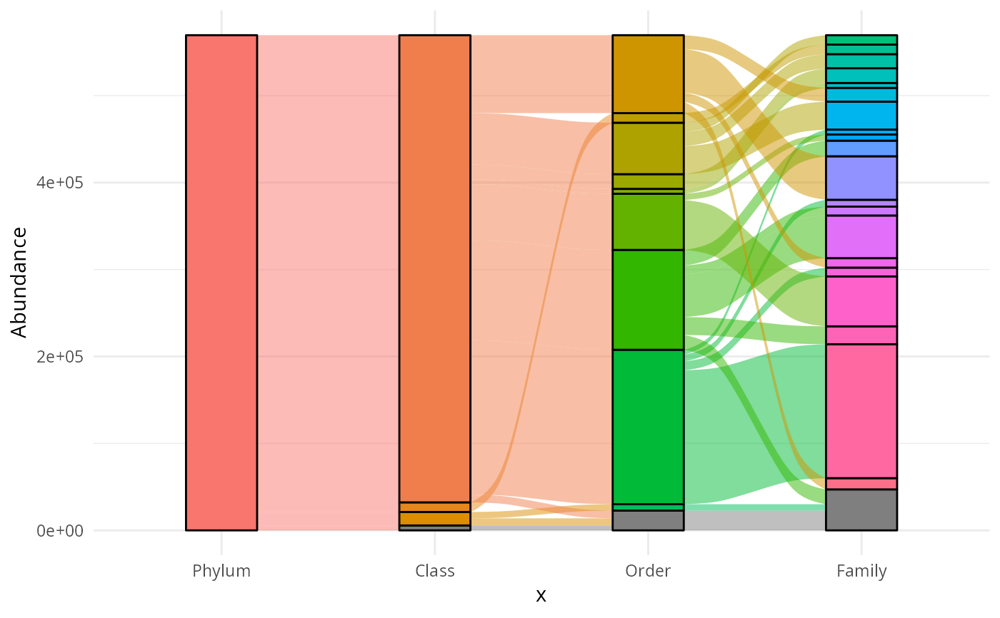
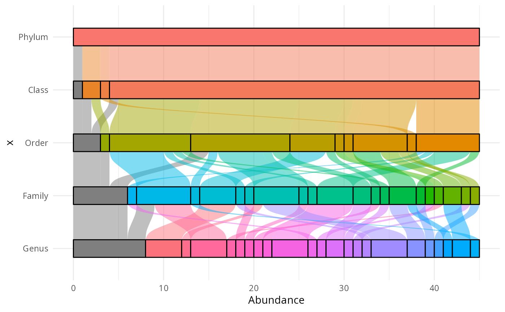

Basically a wrapper of ggalluvial package
Usage
ggaluv_pq(
physeq,
taxa_ranks = c("Phylum", "Class", "Order", "Family"),
wrap_factor = NULL,
by_sample = FALSE,
rarefy_by_sample = FALSE,
fact = NULL,
type = "nb_seq",
width = 1.2,
min.size = 3,
na_remove = FALSE,
use_ggfittext = FALSE,
use_geom_label = FALSE,
size_lab = 2,
...
)Arguments
- physeq
(required): a
phyloseq-classobject obtained using thephyloseqpackage.- taxa_ranks
A vector of taxonomic ranks. For examples c("Family","Genus"). If taxa ranks is not set (default value = c("Phylum", "Class", "Order", "Family")).
- wrap_factor
A name to determine which samples to merge using
merge_samples2()function. Need to be inphyseq@sam_data. Need to be use when you want to wrap by factor the final plot with the number of taxa (type="nb_taxa")- by_sample
(logical) If FALSE (default), sample information is not taking into account, so the taxonomy is studied globally. If fact is not NULL, by_sample is automatically set to TRUE.
- rarefy_by_sample
(logical, default FALSE) If TRUE, rarefy samples using
phyloseq::rarefy_even_depth()function.- fact
(required) Name of the factor in
physeq@sam_dataused to plot the last column- type
If "nb_seq" (default), the number of sequences is used in plot. If "nb_taxa", the number of ASV is plotted.
- width
(passed on to
ggalluvial::geom_flow()) the width of each stratum, as a proportion of the distance between axes. Defaults to 1/3.- min.size
(passed on to
ggfittext::geom_fit_text()) Minimum font size, in points. Text that would need to be shrunk below this size to fit the box will be hidden. Defaults to 4 pt.- na_remove
(logical, default FALSE) If set to TRUE, remove samples with NA in the variables set in formula.
- use_ggfittext
(logical, default FALSE) Do we use ggfittext to plot labels?
- use_geom_label
(logical, default FALSE) Do we use geom_label to plot labels?
- size_lab
Size for label if use_ggfittext is FALSE
- ...
Other arguments passed on to
ggalluvial::geom_flow()function.
Details
This function is mainly a wrapper of the work of others.
Please make a reference to ggalluvial package if you
use this function.
Examples
if (requireNamespace("ggalluvial")) {
ggaluv_pq(data_fungi_mini)
}
#> Loading required namespace: ggalluvial

# \donttest{
if (requireNamespace("ggalluvial")) {
ggaluv_pq(data_fungi_mini, type = "nb_taxa")
ggaluv_pq(data_fungi_mini, wrap_factor = "Height", by_sample = TRUE, type = "nb_taxa") +
facet_wrap("Height")
ggaluv_pq(data_fungi_mini,
width = 0.9, min.size = 10,
type = "nb_taxa", taxa_ranks = c("Phylum", "Class", "Order", "Family", "Genus")
) +
coord_flip() + scale_x_discrete(limits = rev)
}
#> Warning: `group` has missing values; corresponding samples will be dropped

# }